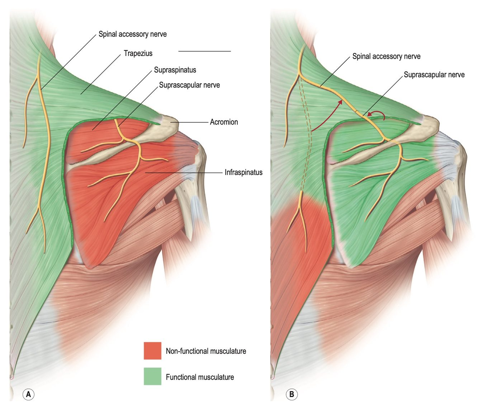
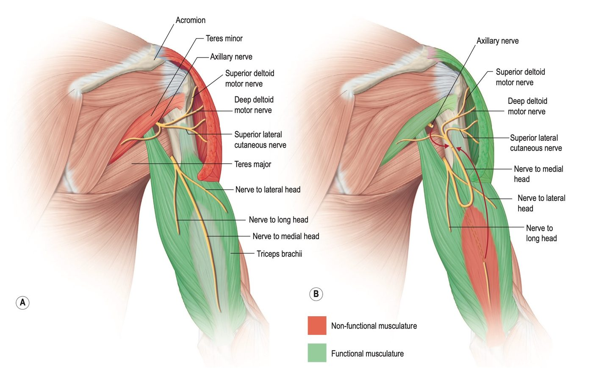
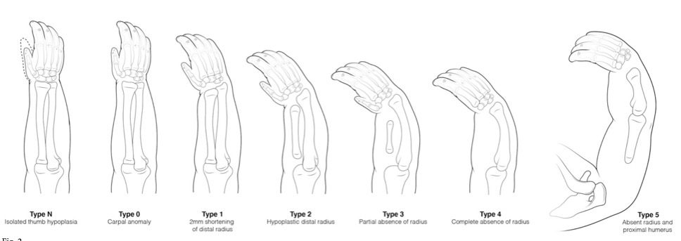
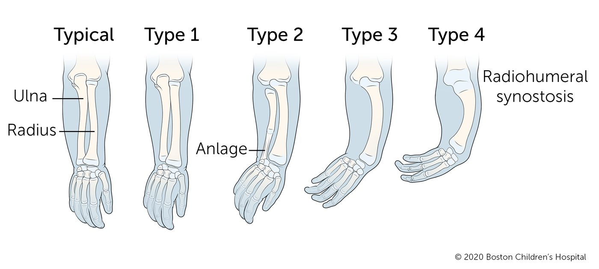
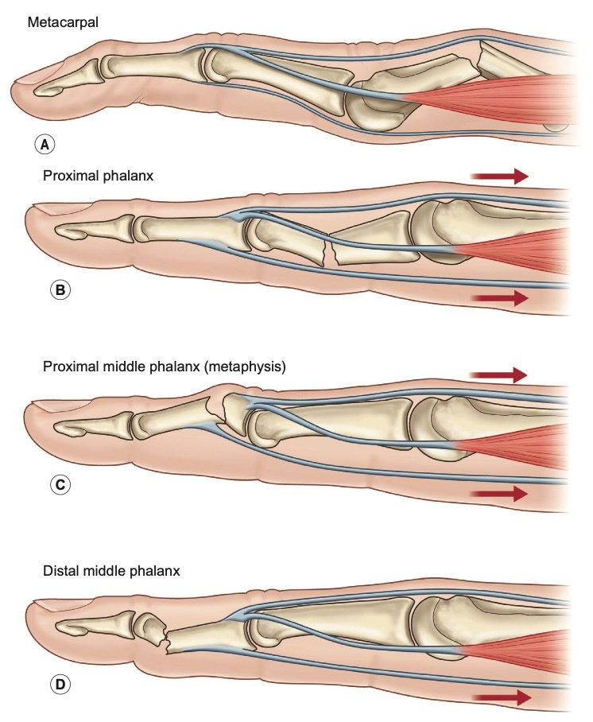

01Brachial plexus 圖譜§
HND · D 臂神經叢
外部圖譜連結，臨考前掃一遍走向。
🔗 Radiopaedia · Brachial plexus diagram ↗
02三重神經轉移（Triple nerve transfers）§
HND · D 臂神經叢 · E 周邊神經修復/移植
C5–C6（Erb palsy）的經典策略：CN XI→SSN、三頭肌支→腋神經、雙束轉移重建屈肘。
「三重神經轉移（Triple nerve transfers）」是專門用來治療 C5–C6 臂神經叢損傷（Erb palsy） 的經典手術策略，能有效重建肩膀與手肘的關鍵功能。這三項神經轉移具體包含：
1. 脊髓副神經 (CN XI) → 肩胛上神經 (Suprascapular nerve)
將未受損的脊髓副神經遠端轉接，主要是為了恢復肩膀的穩定度、外展以及外轉功能。
- 棘上肌（supraspinatus）：負責手臂外展（向外舉起）的起始動作。
- 棘下肌（infraspinatus）：負責肩關節的外旋（向外轉動手臂）。

脊髓副神經 → 肩胛上神經轉移。(A) 損傷後棘上肌／棘下肌失能（紅），斜方肌仍由 CN XI 支配（綠）；(B) 轉接後棘上肌／棘下肌恢復支配。
2. 三頭肌運動神經 → 腋神經 (Axillary nerve)
取用橈神經中支配三頭肌（通常是內側頭）的運動神經分支，轉接給腋神經，藉由重新支配三角肌與小圓肌，進一步增強肩膀的外展與外轉力量。

三頭肌分支 → 腋神經轉移。(A) 三角肌／小圓肌失能（紅）而三頭肌各頭功能完好（綠）；(B) 取內側頭分支轉接至腋神經前支。
3. 雙束神經轉移 (Double fascicular transfers)
從正常運作的尺神經與正中神經內，分離出可犧牲的運動神經束（通常是支配尺側屈腕肌與橈側屈腕肌的部位），轉接給支配肱二頭肌與肱肌的運動神經，藉此恢復強而有力的「手肘彎曲」功能。
- 【尺神經運動束支（ulnar fascicle） ➔ 唯一指定修復「肱二頭肌神經（biceps nerve）」】
- 【正中神經運動束支（median fascicle） ➔ 唯一指定修復深層的「肱肌神經（brachialis nerve）」】
⭐ 記憶錨點只要患者的尺神經與正中神經皆完好，且有可犧牲的供體神經，臨床上通常會優先選擇雙束神經轉移。因為同時重新支配肱二頭肌與肱肌，理論上能提供更強大且持久的屈肘力量。
03電生理判讀速查（CMAP / SNAP / Fibs / PSW / MUP）§
HND · D 臂神經叢 · E 周邊神經修復/移植
根性撕脫時 SNAP 會「騙你」—— 背根神經節在病灶遠端，感覺軸突未變性。
| 一句話 | 好消息還壞消息 |
|---|
| CMAP | 還有幾條運動軸突到得了肌肉 | 振幅高＝好 |
| SNAP | 還有幾條感覺軸突在傳導 | 振幅高＝好；⚠ 但根性撕脫時它會騙你 |
| Fibs | 肌肉失去神經了 | 壞消息（但 <3 週看不到、>1 年可能消失） |
| PSW | 同 Fibs，同一件事的另一種波形 | 壞消息 |
| MUP | 有軸突接回肌肉了 | 好消息（3 個月是關鍵時點） |
🚨 考場地雷⚠ 「感覺喪失但 SNAP 正常」＝ 節前（preganglionic）撕脫的經典組合，這是最常被拿來出題的一格。
04舟狀骨駝背畸形（Humpback deformity）§
HND · G 骨折脫位/韌帶/生長板
掌側路徑 ＋ 髂骨楔形撐開 ＋ 螺絲內固定 —— 一套把生物學與力學綁在一起的公式。
天生向掌側屈曲（flexion），診斷閾值：舟狀骨內角（intrascaphoid angle）> 35° 或 舟月骨角（scapholunate angle）> 15°。
🚨 考場地雷若在此狀態下直接打入螺絲加壓，會加劇屈曲畸形。
因此，手術必須採用掌側路徑（volar approach），並使用結構性自體髂骨骨條（structural iliac crest strut）楔形撐開（wedge open），以恢復正常解剖長度，抗衡螺絲壓縮力。
⭐ 記憶錨點此「掌側路徑 ＋ 髂骨楔形撐開 ＋ 螺絲內固定」是一套將生物學與力學完美結合的經典重建公式。
05Claw hand —— 為什麼擋住 MCP，PIP 就伸得直§
HND · C 神經壓迫與轉位
EDC 的力量從來沒消失，只是被 MCP 過度伸直「吃掉」了。
⭐ 記憶錨點EDC 的伸直力量從來沒有消失，它只是被 MCP 的過度伸直「吃掉」了。堵住 MCP，力量就自動流向 PIP。
只要 MCP 被穩定、不讓它過度伸直，PIP 就可以被外在伸肌腱伸直 —— 這就是 lumbrical bar／Bouvier test 與所有 anti-claw 手術（如 Zancolli capsulodesis、靜態或動態阻擋）背後同一個力學道理。
06手部關節炎分佈與 arthrodesis 角度§
HND · J 關節炎
OA 打兩端、RA 打中間；融合角度 MCP 25–40、PIP 40–55，每指 +5，DIP 幾乎打直。
分佈：誰打哪裡
OA 打兩端（DIP、CMC）、RA 打中間（MCP、PIP）；Heberden 在遠端（H-D 配對：DIP–Heberden 記「遠」）、Bouchard 在近端（PIP）。
Arthrodesis 建議角度
MCP 從 25–40°、PIP 從 40–55° 起，都是每指 +5°；DIP 幾乎打直（0–15°）。唯一要多背的是 拇指 MCP ＝ 15°。
07上肢先天縱向缺損圖譜（Radial / Ulnar deficiency）§
HND · O 先天
橈側缺損看拇指與橈骨（Type N–5）；尺側缺損看 anlage 與 radiohumeral synostosis（Type 1–4）。
橈側縱向缺損（Radial longitudinal deficiency）

Type N（僅拇指發育不良）→ Type 0（腕骨異常）→ Type 1（遠端橈骨短 2 mm）→ Type 2（遠端橈骨發育不良）→ Type 3（橈骨部分缺失）→ Type 4（橈骨完全缺失）→ Type 5（橈骨與近端肱骨皆缺失）。
尺側縱向缺損（Ulnar longitudinal deficiency）

Typical 正常對照 → Type 1 → Type 2（可見 anlage 纖維索）→ Type 3 → Type 4（radiohumeral synostosis 橈肱骨融合）。
🚨 考場地雷分級數字愈大不代表功能愈差 —— 尺側缺損 Type 4 的橈肱骨融合常被誤認為是「最嚴重」，但真正決定功能的是拇指與手部的狀態。
08Clinodactyly vs Camptodactyly§
HND · O 先天
Clino 是左右歪（冠狀面），Campto 是彎不直（矢狀面）。
| 變形方向 | 部位 |
|---|
| Clinodactyly | 橈–尺側偏斜（冠狀面／左右歪） | 常見小指遠端，delta phalanx |
| Camptodactyly | 前後向屈曲攣縮（矢狀面） | PIP 關節，常見小指 |
09掌骨與指骨骨折的變形方向§
HND · G 骨折脫位/韌帶/生長板
掌骨與 P2 近端 → apex dorsal；P1 與 P2 遠端 → apex volar。記住是「誰拉住哪一塊」。
| 骨折部位 | 骨折成角方向（X 光呈現） | 外觀塌陷方向 | 核心主導「變形鋼絲」 |
|---|
| 掌骨 (Metacarpal) | 🔴 Apex Dorsal | 掌側塌陷（拳骨凹陷） | 骨間肌（interossei）將遠端掌骨頭往掌側拉。 |
| 近節指骨 (P1) | 🟢 Apex Volar | 背側塌陷（PIP 過直） | 骨間肌將近端拉往掌側 ＋ central slip 將遠端拉往背側。 |
| 中節指骨 (P2) — 近端骨折 | 🔴 Apex Dorsal | 掌側塌陷 | Central slip 拉近端往背側 ＋ FDS 拉遠端往掌側。 |
| 中節指骨 (P2) — 遠端骨折 | 🟢 Apex Volar | 背側塌陷 | FDS 將近端骨折塊死死拉往掌側。 |
← 表格可左右滑動 →

(A) 掌骨 (B) 近節指骨 (C) 中節指骨近端（幹骺端） (D) 中節指骨遠端 —— 紅色箭頭為主導變形的肌腱牽引方向。
⭐ 記憶錨點判斷邏輯永遠是同一句：先問「哪條肌腱抓住近端、哪條抓住遠端」，成角方向就自動掉出來。
10前臂屈側（掌側）八條肌肉的神經分工§
HND · A 解剖/生物力學 · C 神經壓迫與轉位
⭐ 尺神經在前臂只管「一條半」：FCU ＋ FDP 尺側兩指；⚠ FDS 屬正中神經本幹，不是 AIN。
三層、共八條肌肉
| 層 | 肌肉 | ⭐ 神經 |
|---|
淺層
（起自 medial epicondyle） | Pronator teres | 正中 |
| FCR | 正中 |
| Palmaris longus | 正中 |
| ⭐ FCU | ⭐⭐ 尺神經 |
| 中層 | ⭐ FDS（食、中、環、小指全部） | ⭐⭐ 正中神經本幹
（⚠ 非 AIN） |
| 深層 | FDP 食指、中指 | ⭐ AIN |
| ⭐ FDP 環指、小指 | ⭐⭐ 尺神經 |
| FPL | ⭐ AIN |
| Pronator quadratus | ⭐ AIN |
⭐ 記憶錨點一句話總結：尺神經在前臂只管「一條半」—— FCU ＋ FDP 的尺側兩指。其餘全歸正中神經系統。
AIN vs 正中神經本幹的分界（高頻考點）
- ⭐ AIN 只管三樣：FPL、FDP（食、中）、pronator quadratus。
- ⚠ FDS 是本幹，不是 AIN —— 這是最常錯的一格。
- ⭐ AIN 是純運動神經（僅有腕關節的感覺傳入），⚠ 所以 AIN 症候群沒有感覺異常。
分支順序（近端 → 遠端）
- 正中神經：pronator teres → FCR → PL → FDS →（穿過 pronator teres 兩頭之間後發出 AIN）→ FPL、FDP(I, M)、PQ
- 尺神經：（穿過 FCU 兩頭之間進入前臂）→ FCU → FDP(R, S)
⭐ 記憶錨點⭐ 兩條神經各自的「入口隧道」剛好是它支配的第一條肌肉 —— 正中穿 pronator teres、尺穿 FCU。好記。
臨床推論（互補的兩組表現）
| 麻痺部位 | 運動缺損 | ⚠ 鑑別要點 |
|---|
| ⭐ 孤立 AIN 麻痺 | FPL ＋ 食指（±中指）FDP 癱 → ⭐ 無法做「OK 手勢」，捏起來變成扁平三角形 | ⚠ 無感覺異常；環、小指 DIP 仍可屈 |
| ⭐ 高位尺神經麻痺 | 環、小指 DIP 屈曲喪失、FCU 癱（腕屈曲時偏橈側） | ⚠ PIP 屈曲保留（FDS 完好） |
| ⭐ 正中神經高位麻痺 | Benediction hand（食、中指無法屈）＋ 拇指對掌喪失 ＋ 前臂旋前無力 | 與腕隧道不同 —— 旋前無力只見於高位 |
⭐ 記憶錨點⭐ Ulnar paradox：高位損傷因 FDP 也癱，爪狀反而較輕；腕部損傷 FDP 完好 → 爪狀更明顯。
⚠ 三個變異要知道
- ⭐ 中指 FDP 的支配浮動：可為 AIN、尺神經或兩者共同。
- ⭐ Martin–Gruber anastomosis：前臂內正中（常來自 AIN）→ 尺神經的交通支，約 15–20%；⚠ 會讓尺神經麻痺的表現比預期輕，且干擾神經傳導檢查判讀。
- ⭐ FDP 是「單一肌腹、雙重神經支配」 —— 橈側 AIN、尺側尺神經，肌腹卻連在一起（quadriga effect 的解剖基礎）。
與其他章節的連結
- ⭐ Transradial TMR（Table 40.3）：保留 Median → FCR、FDS（腕屈、指屈）；轉移 Median → AIN、Ulnar → FCU 運動支 —— 正好對應各自的原生領地。
- ⭐ 四肢癱重建（Ch.24）：環指 FDS 是最常用的移植腱與 lasso 材料（正中支配，C6–C7 損傷時常保留）；ECRL→FDP 因共用肌腹而能一次驅動四指。
- ⭐ Hunter 分期重建：動力肌選擇 —— 中／環／小指用 FDP 肌群，食指用自己的 FDP（獨立肌腹）。
11Nalebuff–Millender 分級（類風濕手指鈕釦孔變形）§
HND · J 關節炎
⚠ 與拇指的 Nalebuff I–VI 是兩套分類：拇指看「變形型態」，手指鈕釦孔看「嚴重度」。⭐ 分軸是被動可矯正性，不是 X 光。
🚨 考場地雷⚠ 先分清楚：這與拇指的 Nalebuff（I–VI 型）是兩套不同分類。⭐ 拇指看「變形型態」；手指鈕釦孔看「嚴重度」。
⭐ 軸是什麼
三個變數合成一個嚴重度軸：
- ⭐⭐ PIP 伸展遲滯（extension lag）的度數
- ⭐⭐ 被動可矯正性（passive correctability） —— 這是最關鍵的一項
- ⭐ 關節面是否已破壞
🚨 考場地雷⚠ 注意它不是放射線分級 —— ⭐⭐ 與 Eaton、K–L 完全不同軸；這是純臨床（理學檢查）分級。
⭐ 三期
| Stage | ⭐ PIP extension lag | ⭐⭐ 被動矯正 | ⭐ 關節面 |
|---|
| ⭐ I（mild） | ⭐ 10–15° | ⭐⭐ 可完全矯正 | 完好 |
| ⭐ II（moderate） | ⭐⭐ 30–40° | ⭐ 仍可被動矯正（supple），但功能已明顯受損 | 完好 |
| ⚠ III（severe） | ⭐ 固定屈曲攣縮 | ⭐⭐ 不可矯正（fixed） | ⚠ 常已破壞 |
← 表格可左右滑動 →
⭐ 記憶錨點⭐ 共同特徵：PIP 屈曲 ＋ DIP 過度伸展；⚠ MCP 過度伸展是「代償」，不是原發變形。
12Melone 分類（遠端橈骨骨折的四部分與五型）§
HND · G 骨折脫位/韌帶/生長板
⭐⭐ 第 3＋4 塊合稱「內側複合體」，Melone 稱之為 cornerstone；五個型別就是看它的狀態。
⭐⭐ 四個骨塊
| # | 骨塊 | ⭐ 附著的關鍵韌帶／臨床意義 |
|---|
| ⭐ 1 | 橈骨骨幹（radial shaft） | 近端主體，復位的參考基準 |
| ⭐⭐ 2 | 橈骨莖突（radial styloid） | ⭐ brachioradialis 附著 → 牽拉造成短縮與橈偏；⭐ radioscaphocapitate 與 long radiolunate 韌帶起點 |
| ⭐⭐ 3 | 內側複合體 —— 背側內側骨塊
（dorsal medial／dorsoulnar facet） | ⭐ dorsal radioulnar ligament 附著 → 連著 TFCC |
| ⭐⭐ 4 | 內側複合體 —— 掌側內側骨塊
（palmar medial／volar ulnar corner） | ⭐⭐ short radiolunate ＋ volar radioulnar ligament 附著 → 決定腕骨與 DRUJ 穩定 |
⭐ 記憶錨點⭐⭐ 核心概念：第 3 ＋ 第 4 塊合稱「Medial complex（內側複合體）」，Melone 稱之為 “the cornerstone（基石）”。
⭐ 五個型別（依內側複合體的狀態）
| Type | ⭐ 特徵 | 處置 |
|---|
| ⭐ I | 穩定，四塊無明顯移位 | ⭐ 閉合復位 ＋ 石膏 |
| ⭐ II（“die-punch”） | ⭐⭐ 內側複合體整塊移位、不穩定；lunate 撞入 lunate facet | ⭐ 需復位固定；IIa 可復位／IIb 不可復位（需切開） |
| ⭐ III（“spike”） | ⭐ II ＋ 橈骨骨幹掌側突出一根尖刺，⚠ 可傷及正中神經或屈肌腱 | ⭐ 切開復位 |
| ⭐ IV | ⭐⭐ 內側複合體「分裂」—— 背側與掌側骨塊分離且旋轉 | ⚠ ORIF，常需雙入路 |
| ⚠ V | ⭐ 爆裂型（explosion），粉碎嚴重 | ⭐ 外固定 ± 內固定 ± 骨移植 |
⭐ 記憶錨點⭐⭐ 記憶軸：I 穩定 → II 內側整塊移位 → III 加掌側尖刺 → IV 內側裂成兩塊 → V 爆掉。
13DISI／VISI —— 近排腕骨不穩定§
HND · G 骨折脫位/韌帶/生長板
⭐ 以 lunate 的傾斜方向命名。SLIL 斷 → 跟三角骨背屈 → DISI；LTIL 斷 → 跟舟狀骨掌屈 → VISI。
⭐ 定義與命名
以 lunate（月狀骨）的傾斜方向命名 —— ⚠ 不是 scaphoid，也不是 capitate。
- ⭐ DISI ＝ Dorsal Intercalated Segment Instability：lunate 背屈（extended）
- ⭐ VISI ＝ Volar（Palmar）Intercalated Segment Instability：lunate 掌屈（flexed）
⭐⭐ 核心機轉：近排腕骨的內在傾向相反
- Scaphoid 天生想「屈曲（flex）」 —— 因為它斜跨兩排，遠端受 capitate 的壓力推向掌屈
- Triquetrum 天生想「伸展（extend）」 —— 經 hamate 的螺旋關節面
- ⭐ Lunate 夾在中間，被兩邊拉扯，靠 SLIL 與 LTIL 維持平衡。
| 斷掉的韌帶 | 誰失去約束 | ⭐ Lunate 跟誰走 | 結果 |
|---|
| ⭐⭐ SLIL（舟月） | scaphoid 自行屈曲 | ⭐ 跟著 triquetrum 伸展 | ⭐⭐ DISI |
| ⭐⭐ LTIL（月三角） | triquetrum 自行伸展 | ⭐ 跟著 scaphoid 屈曲 | ⭐⭐ VISI |
← 表格可左右滑動 →
⭐ 記憶錨點⭐⭐ 一句話記法：「Lunate 跟著還連著的那一邊走。」
SLIL 斷 → 跟三角骨 → 背屈 → DISI｜LTIL 斷 → 跟舟狀骨 → 掌屈 → VISI
⭐ 影像判準（必背數字）
| 角度 | 正常 | ⭐ DISI | ⭐ VISI |
|---|
| ⭐⭐ Scapholunate angle | 30–60° | ⭐ >60–70° | ⭐ <30° |
| ⭐ Capitolunate angle | <15° | ⭐ >15°（背側） | >15°（掌側） |
| Radiolunate angle | ～0° | 背屈 >15° | 掌屈 >15° |
← 表格可左右滑動 →
⭐ 病因對照
| ⭐ DISI | ⭐ VISI |
|---|
| 核心病灶 | ⭐⭐ SLIL 斷裂（scapholunate dissociation） | ⭐⭐ LTIL 斷裂 |
| 常見成因 | ⭐ FOOSH（伸腕＋尺偏＋旋後）、⭐ 舟狀骨不癒合（SNAC）、Kienböck 晚期 | ⭐ 尺側韌帶鬆弛、類風濕、⚠ 常見於全身性韌帶鬆弛者（可能是無症狀變異） |
| 盛行率 | ⭐⭐ 遠比 VISI 常見 | 較少 |
| ⚠ 關鍵警告 | — | ⚠⚠ VISI 常是「生理性鬆弛」而非病理，必須有症狀＋動態證據才算 |
⭐⭐ Mayfield 進行性腕周脫位（DISI 的機轉來源）
外力由橈側往尺側依序破壞：
- ⭐ Scapholunate 分離 → DISI 的起點
- Capitolunate 脫位（perilunate）
- Lunotriquetral 分離
- ⭐ Lunate 掌側脫位（⚠ 完全脫出，壓迫正中神經）
⭐ 記憶錨點⭐ 記憶：由橈至尺、由掌側 space of Poirier 撕開，第 IV 期 lunate 掉進腕隧道。
14SLAC vs SNAC —— 兩條路徑、同一個終點§
HND · G 骨折脫位/韌帶/生長板 · J 關節炎
⭐ DISI 是共同的中間產物、關節炎是共同終點，差別只在起點（韌帶 vs 骨）。⭐⭐ Radiolunate 幾乎永遠最後才壞。
⭐ 核心命題
⭐ DISI 是「共同的中間產物」，SLAC／SNAC 是「共同的終點」，差別只在「起點」。
- ⭐ 路徑 A（SLAC）：SLIL 斷裂 → scaphoid 失去約束而屈曲、lunate 跟 triquetrum 背屈 → ⭐ DISI → ⚠ 舟狀骨遠極與橈骨莖突異常接觸 → ⭐⭐ SLAC
- ⭐ 路徑 B（SNAC）：舟狀骨骨折不癒合 → ⚠ 舟狀骨從「一塊」變成「兩塊」 → 近極跟著 lunate 背屈、遠極跟著 capitate 屈曲 → ⭐ 一樣造成 DISI（即 humpback deformity） → 遠極與橈骨莖突異常接觸 → ⭐⭐ SNAC
🚨 考場地雷⚠ SNAC 與 DISI 不是「先後」，而是「同時發生的一體兩面」 —— 骨折不癒合的那一刻，力學就已經斷了，DISI 隨即出現。
起點對照
| ⭐ SLAC | ⭐ SNAC |
|---|
| 起點 | ⭐⭐ SLIL 斷裂（韌帶） | ⭐⭐ 舟狀骨不癒合（骨） |
| 舟狀骨本身 | ⭐ 完整，但整塊屈曲 | ⚠ 斷成兩塊，各走各的 |
| DISI | ✅ | ✅ |
| 關節炎進展 | ⭐ 完全相同的四期 | ⭐ 相同（僅 stage I 在遠極與莖突之間） |
| 盛行率 | ⭐⭐ 腕退化性關節炎最常見原因 | 第二 |
⭐ 分期對照（最常考的一組）
| Stage | ⭐ SLAC | ⭐ SNAC |
|---|
| I | 舟狀骨近極與橈骨莖突 | ⭐ 舟狀骨「遠極」與橈骨莖突 |
| ⭐⭐ II | ⭐ 整個 scaphoid–radius 關節 | ⭐ Scaphocapitate 關節 |
| III | Capitolunate | Capitolunate |
| ⚠ IV | ⭐ Radiolunate（極罕見） | 全腕 |
🚨 考場地雷⚠ 注意 stage II 的差異：SNAC 的第二站是 scaphocapitate（近極仍與 lunate 一起背屈，遠極擠向 capitate）；⭐ SLAC 的第二站是「整個舟橈關節」 —— 因為 SLAC 的舟狀骨是完整一塊、整體旋轉，先壞的是它與橈骨的介面。
⭐⭐ SNAC 的 Watson–Ballet 四期
| Stage | ⭐ 關節炎位置 | 治療 |
|---|
| ⭐ I | ⭐⭐ 舟狀骨「遠極」與橈骨莖突之間 | ⭐ 橈骨莖突切除 ＋ 不癒合處理（骨移植＋內固定，可加血管化骨） |
| ⭐ II | ⭐⭐ 加上 scaphocapitate 關節 | ⭐ 4CF ＋ 舟狀骨切除；或遠極切除（選擇性） |
| ⭐ III | ⭐ 加上 capitolunate（lunocapitate）關節 | ⭐⭐ 4CF ＋ 舟狀骨切除；⚠ PRC 禁用 |
| ⚠ IV | ⭐ 全腕（含 radiolunate） | ⭐ 全腕融合（或全腕關節置換） |
⭐ 記憶錨點⭐⭐ 共同的解剖鐵律：Lunate 窩（radiolunate 關節）幾乎永遠最後才壞 —— 因為 lunate 的關節面與橈骨窩仍維持同心接觸。⚠ 這就是所有 salvage 手術（PRC、4CF）能成立的唯一理由。
15腕骨救援手術 —— 4CF／PRC／STT 對照§
HND · J 關節炎 · G 骨折脫位/韌帶/生長板
⚠ 4CF ＝ lunate＋capitate＋hamate＋triquetrum ＋切除舟狀骨（舟狀骨是被「拿掉」，不是被融合進去）。⭐ Capitate 頭壞 → PRC 禁用。
⚠ 4CF 不是直覺想的那四塊
⭐⭐ Four-corner fusion（4CF）＝ 融合 Lunate ＋ Capitate ＋ Hamate ＋ Triquetrum
⭐ 記憶錨點⭐ 記憶：「近排的尺側兩塊（lunate、triquetrum）＋ 遠排的尺側兩塊（capitate、hamate）」＝ 腕骨的尺側四角。
🚨 考場地雷⚠ 而且必須同時做 scaphoid excision（舟狀骨切除） —— ⭐ 舟狀骨是被「拿掉」的，不是被融合進去的。
為什麼是這四塊
- ⭐ 切除舟狀骨 → 消除舟橈關節的疼痛來源
- ⭐ 融合尺側四角 → 把 lunate 從「屈伸自由的中介段」變成與 capitate 一體 → ⭐⭐ DISI 被永久矯正
- ⭐ 保留 radiolunate 關節 → 腕的屈伸動作由此提供
⭐ 術後功能：ROM 約保留 50–60%、握力約 70–80%。
⭐ 最容易混淆的是 STT fusion
⭐ STT ＝ Scaphoid ＋ Trapezium ＋ Trapezoid（舟、大多角、小多角）—— 這才是含「舟狀骨與大多角骨」的那一個。
適應症：⭐ STT 關節炎、或 SLAC 前期需穩定舟狀骨屈曲者。
| 術式 | ⭐ 涵蓋骨 | 適應症 |
|---|
| ⭐⭐ 4CF | Lunate、Capitate、Hamate、Triquetrum（⚠ ＋切除 scaphoid） | ⭐ SLAC／SNAC II–III |
| STT | Scaphoid、Trapezium、Trapezoid | STT 關節炎、舟狀骨旋轉半脫位 |
| SC | Scaphoid ＋ Capitate | 舟狀骨不穩定 |
| ⭐ PRC | ⚠ 不是融合 —— 切除 scaphoid、lunate、triquetrum | ⭐⭐ 僅 SLAC／SNAC I–II；⚠ III 期禁用（capitate 頭已壞） |
⭐ PRC vs 4CF 對照
| ⭐ PRC | ⭐ 4CF |
|---|
| 本質 | ⭐ 切除（不融合） | ⭐ 融合 ＋ 切除舟狀骨 |
| 新關節 | ⭐⭐ Capitate 頭 vs 橈骨月狀窩 | 保留原本的 radiolunate |
| ⚠ 前提 | ⭐⭐ Capitate 頭必須完好 | 無此限制 |
| ROM | ⭐ 較佳（約 60–70%） | 約 50–60% |
| 握力 | 略低 | ⭐ 較佳（70–80%） |
| 不癒合風險 | ⭐ 無 | ⚠ 有（尤其用 K-wire 或 circular plate） |
| 長期 | ⚠ 年輕、勞力者可能較早退化 | 較耐用 |
⭐ 記憶錨點⭐ 一句話：Capitate 頭好 → PRC（快、無不癒合）；capitate 頭壞 → 只能 4CF。
⭐ 治療決策（SLAC／SNAC 共用同一套邏輯）
| 情境 | ⭐ 處置 |
|---|
| ⭐ 不癒合但「尚無關節炎」 | ⭐⭐ 舟狀骨骨移植 ＋ 內固定（近極缺血 → 血管化骨移植：1,2-ICSRA、medial femoral condyle） |
| ⭐ Stage I | ⭐ 橈骨莖突切除 ＋ 處理不癒合 |
| ⭐ Stage I–II（capitate 頭完好） | ⭐⭐ PRC —— 切除 scaphoid、lunate、triquetrum |
| ⭐ Stage II–III | ⭐⭐ 4CF ＋ 舟狀骨切除 |
| ⚠ Stage III | ⚠⚠ PRC 禁用（capitate 頭已有關節炎） |
| ⚠ Stage IV | ⭐ 全腕融合 |